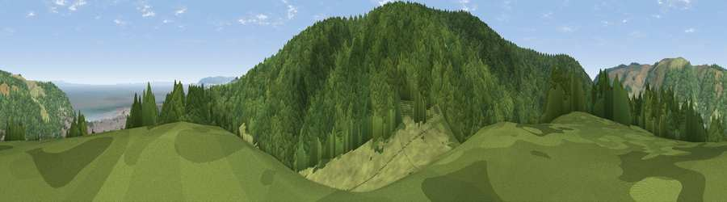

Viewpoint near Minehead
#15515 in England · top 37% of its area beats it · near Minehead · path 116 mWhere it is
The exact computed spot (SS 95675 45025). Click the marker for map links.
Public access: the nearest public right of way is about 116 m away — the final stretch may cross private land. Computed from Natural England's CRoW access layer and OpenStreetMap rights of way — not the legal definitive map. Always verify locally.
The view, rendered

A 360° render of this exact spot computed from the terrain model, tree cover and land cover — summer colours, afternoon light, calibrated against photographs of famous viewpoints. Real trees, hedges and buildings will differ in detail.
The panorama
Grey silhouette: terrain skyline in each direction (720 bearings, Earth curvature and refraction included). Dashed green: skyline with trees (+15 m) and buildings (+8 m) as obstacles. Blue strip: how far the ground is visible on each bearing.
Where the view opens
Wedge length = distance to the farthest visible ground on that bearing (vegetation-aware). Rings at 10, 25 and 50 km.
What fills the view
65% woodland · 22% grassland · 6% water · 6% built-up
Angular shares of the visible panorama (visual magnitude), not map area. Landscape diversity 0.43 (0–1 Shannon).
Key numbers
More beautiful places nearby
The staircase of upgrades: each row has a higher view potential than everything closer. Driving times are estimates from straight-line distance, calibrated against real road routing — check an actual route before setting out.
| Place | Direction | Drive | Score |
|---|---|---|---|
| Viewpoint near Alcombe | SE · 2 km | ~6 min | 80.8 |
| Viewpoint near Minehead | NNE · 2 km | ~6 min | 83.0 |
| Viewpoint near Minehead | NNW · 2 km | ~6 min | 86.2 |
| North Hill | NNW · 3 km | ~7 min | 86.3 |
| Viewpoint near Allerford | NNW · 4 km | ~9 min | 86.7 |
| Selworthy Beacon | NW · 5 km | ~11 min | 88.7 |
| Holdstone Hill | W · 34 km | ~52 min | 90.2 |
| The Knoll | SE · 81 km | ~105 min | 91.0 |
51.19489, -3.49439 · source: screening · position refined by local search. Computed location — check access rights before visiting.